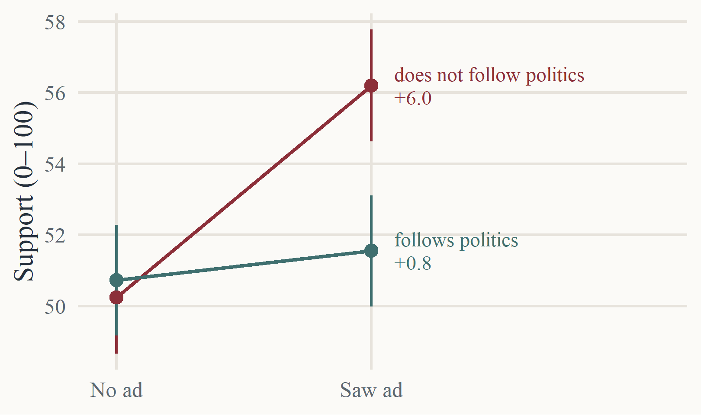
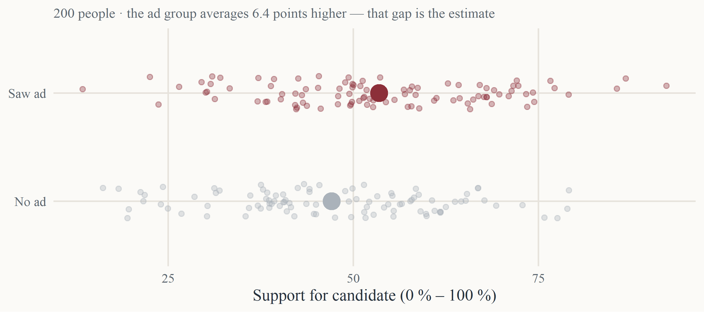
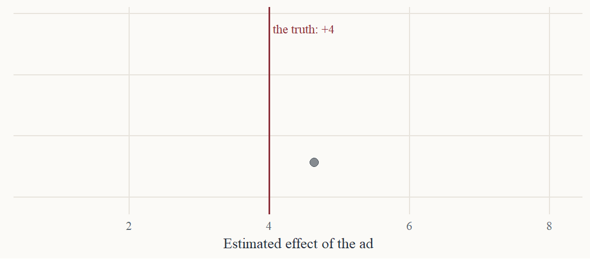
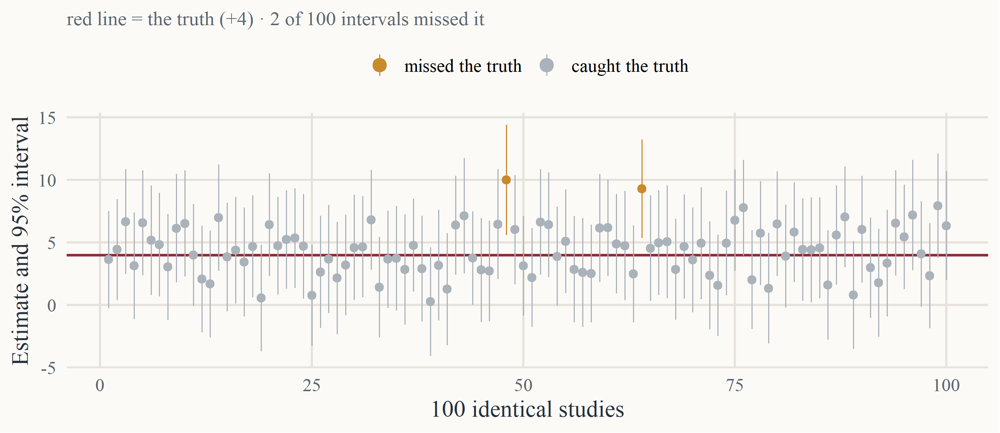
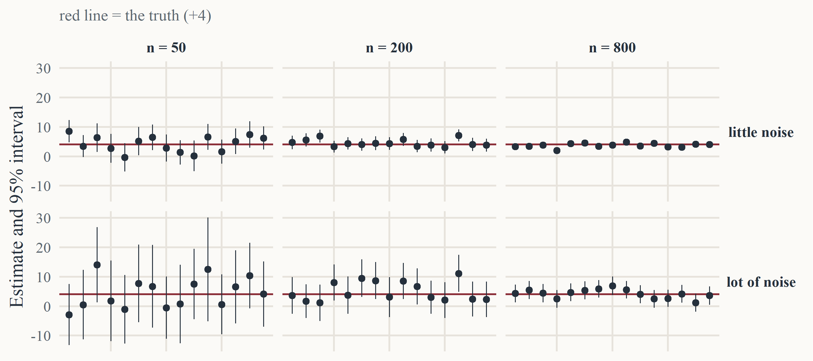
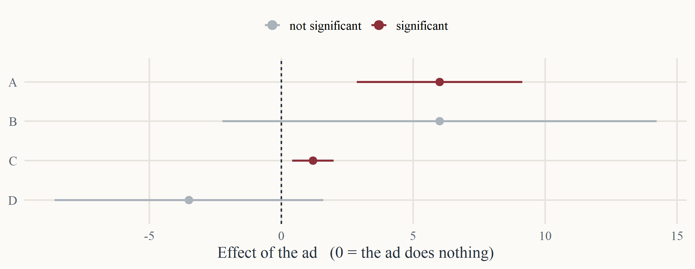
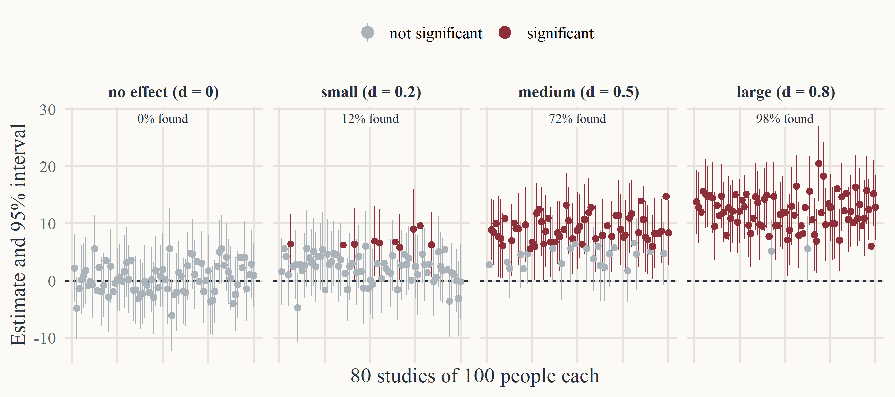

Do Ads Work?
Political Persuasion — Session 1
Tadeas Cely
Department of Political Science, Aarhus University
August 27, 2026
Agenda
Framework for the study of persuasion (Branham, Wlezien 2020; Druckman 2022)
Introduction to the psychology of attitudes and persuasion (Lau 2019)
How to read quantitative research on persuasion
Evidence on what persuasion is possible (Amsalem, Zoizner 2022; Coppock et al. 2020)
Persuasion in practice: Campaigns
Changing what
Attitudes, preferences (policies, candidates)
Behaviors (voting, consumer…)
Changing how
Communication: sustained through media, paid through advertisements
Branham and Wlezien (2020)
Framing
Priming
Generalized Framework
Actors
Speaker(s)
- Types (e.g., elites, media, opinion leaders, friends/family)
- Motivations in crafting messages
Receiver(s)
- Assessments across weighted dimensions
- Effort, motivation, prior attitudes
Treatments
Topic
- Persons/groups, issues, institutions, products
- Variation within a topic (e.g., different policy issues)
Message content
- Argument strength (and inadequacy)
- Framing and evaluations
- Matching to receivers' goals
- Altering receivers' motivations (e.g., using narratives)
Medium
- Alters frames, processing goals, and/or effort
- Interactions with other persuasion variables
Outcomes
Attitude
- General evaluation of an object (broadly construed)
Behavior
- Does not always follow from an attitude
- Depends on attitude attributes, injunctive and descriptive norms, behavioral control, and emotions
Emotion
- Can inform conscious evaluations or override them
Identity
- Often activated when threatened
- Common identity, group appeals
Settings
Competition
- Number of speakers
- Number of receivers
- Observers
Space
- Change in one setting may not generalize to others
Time
- Pretreatment — what happened before the message
- Posttreatment duration — how long an effect lasts
- Time between exposure and outcome measurement
Process
- Threatening settings
- Political (conflictual) versus deliberative settings
Culture
- Shapes understandings of topics
- Alters salience of different values
Druckman (2022), Table 1
Psychology of attitudes
Attitudes: summary evaluation of political object, hypothetical, only observed undirectly through behavior
Knowledge
makes the world make sense
object appraisal
Value-expressive
says who I am
values · group identity
attitude
Utilitarian
helps me get along with others
instrumental · adjustive
Ego-defensive
protects me from what I would rather not see
self-protection
Non-attitudes (Converse 1964): some people answer from top of their head, instability, belief systems
Lau (2020)
Psychology of persuasion
Need for cognitive consistency: people seek balance (affective or agreement) and avoid cognitive dissonance, a state of psychological inconsistence; typical for persuasion
Dual process theories: deep, systematic and conscious pathway of attitude change versus heuristical, automatical processing of information; it often depends on the topic and audience (importance of the object matters)
Lau (2020)
Summary
Attitudes: unobservable summary evaluations, composed of beliefs, expressed in behavior, serving several psychological needs
Persuasion framework: actors, treatments, outcomes, settings — each shapes what persuasion looks like and how well it works
Concepts to remember: framing, priming, attitudes and beliefs/considerations, non-attitudes, dual-process theories
Video Advertisements Examples
Borris Johnson Ad
Rang-Tang In My Bedroom
Tyson Superbowl Ad
God Made a Dictator
Break
Reading quantitative research
A · Searching for true persuasive effect
Estimate · confidence interval · significance · power
B · Designing the search
Between-subject · within-subject · meta-analysis · megastudy
Note: All illustrations created by simulation. No real data.
A · Searching for true persuasive effect
One experiment, one estimate

The estimate is a comparison: the treated average minus the untreated average. A bivariate regression is that subtraction, written formally.
The estimate is not the truth

Forty honest researchers, one true effect, forty different answers. The scatter is not sloppiness — it is the luck of who ended up in the sample.
The confidence interval

The interval is the set of effects the data cannot rule out. About 95 of every 100 such intervals contain the truth — that is all “95%” means.
What makes an interval narrow?

The precision of estimation depends on the effect size and background noise.
Statistical significance

C is significant and tiny; B is not significant and large.
This eyeball test works only against zero. Comparing two studies is a different test: their intervals can overlap and the difference between them still be significant. Never read one off the other.
p value asks: if the ad did nothing, how often would we see an estimate this big? Under 0.05 by convention — the same thing as an interval that misses zero.
Effect size

Same 100 people every time. A strong treatment is caught almost always — a weak one is missed almost always. Strong treatments can be detected in small samples; weak ones need very large ones.
Reading a regression table
| Term | Estimate | Std. error | p |
|---|---|---|---|
| (Intercept) | 50.2*** | 0.8 | <0.001 |
| Saw ad | 6.0*** | 1.1 | <0.001 |
| Follows politics | 0.5 | 1.1 | 0.665 |
| Saw ad × Follows politics | -5.1** | 1.6 | 0.001 |
Outcome: support for the candidate, 0–100 points · N = 1,200 · * p < 0.05 ** p < 0.01 *** p < 0.001
Interpreting estimates — look at scale first, here percentage points in support; 95% CI ≈ estimate ± 1.96 SE
Significance — stars, or p < 0.05, or estimate more than 1.96 SEs from 0
Interaction — the ad’s effect is moderated by interest in politics: +6.0 among the inattentive, +6.0 − 5.1 = +0.8 among the attentive
B · Designing the search
Two ways to run an experiment
Between subjects
1,000 participants
▼ randomize
Group A
sees the ad
sees the ad
Group B
sees a filler (placebo)
sees a filler (placebo)
▼
Measure once
▼
Effect = A − B
Compares people. Each person used once.
Within subjects
1,000 participants
▼
Measure before
▼
Everyone sees the ad
▼
Measure after
▼
Effect = after − before
▼ (repeated measures)
one person can receive multiple ads and measured after each
Compares a person with themselves.
Pooling many studies
Meta-analysis · pool the results
Study 1
+4.0 (±1.5)
+4.0 (±1.5)
Study 2
+0.5 (±2.9)
+0.5 (±2.9)
Study 3
−1.2 (±1.1)
−1.2 (±1.1)
▼ average them, weighting the precise ones more
One summary effect
Studies already published, by different teams, at different times and sizes.
Megastudy · pool the people
Ad A
1,000 people
1,000 people
Ad B
1,000 people
1,000 people
Ad C
1,000 people
1,000 people
▼ one shared control group
One dataset · analysed once
▼
Every ad on the same scale
Many studies fielded at the same time.
Same goal, one better-powered answer. Meta-analysis trades in estimates after the fact; megastudy trades in people, planned in advance.
Do ads even work?
Amsalem, Zoizner 2022
Subject
Framing effects in politics — the same issue, presented differently.
Method
Meta-analysis · 138 published framing experiments · N = 64,083 · every result standardized (converted to Cohen’s d)
Details
- Compares emphasis on gain versus emphasis on loss per policy
- Outcomes split: attitudes · emotions · behaviour
- Competitive framing (both sides) analysed separately
Medium-sized effect. Attitudes d = 0.41 · emotions d = 0.47 · behaviour d = 0.11 · under frame competition d = 0.18. It matters how you frame issue for opinions and emotions, when you talk about it.
Results

Amsalem and Zoizner (2022)
Coppock, Hill, Vavreck 2020
Subject
Testing effects of real televised campaign ads. Focused on a) effects and b) how much circumstances matter
Method
Megastudy, 59 randomised survey experiments, run weekly in real time through the 2016 US presidential campaign · 49 real ads · 34,000 people.
Details
- Between subject, ads tested as they aired
- Outcomes: candidate favourability (5-point) and vote choice
- Heterogeneity by sender, receiver, content, context
Small everywhere. 0.05 points on the 5-point favourability scale · 0.7 percentage points on vote choice (not significant). No subgroup where ads work very well — heterogeneity is not what hides the small average.
Results

Coppock, Hill, and Vavreck (2020)
Persuading Better
Understanding the underlying psychology and the main challenges
Improving communication strategies and using new tools and technology to persuade
Adjusting the message to context and audiences, and understanding motives
Learning how to analyze what works and what does not
References
Amsalem, Eran, and Alon Zoizner. 2022. “Real, but Limited: A Meta-Analytic Assessment of Framing Effects in the Political Domain.” British Journal of Political Science 52 (1): 221–37.
Branham, J. Alexander, and Christopher Wlezien. 2020. “Do Election Campaigns Matter? A Comparative Perspective and Overview.” In The Oxford Handbook of Electoral Persuasion, edited by Elizabeth Suhay, Bernard Grofman, and Alexander H. Trechsel. Oxford: Oxford University Press.
Coppock, Alexander, Seth J. Hill, and Lynn Vavreck. 2020. “The Small Effects of Political Advertising Are Small Regardless of Context, Message, Sender, or Receiver: Evidence from 59 Real-Time Randomized Experiments.” Science Advances 6 (36).
Druckman, James N. 2022. “A Framework for the Study of Persuasion.” Annual Review of Political Science 25: 65–88.
Lau, Richard R. 2020. “Classic Models of Persuasion.” In The Oxford Handbook of Electoral Persuasion, edited by Elizabeth Suhay, Bernard Grofman, and Alexander H. Trechsel. Oxford: Oxford University Press.